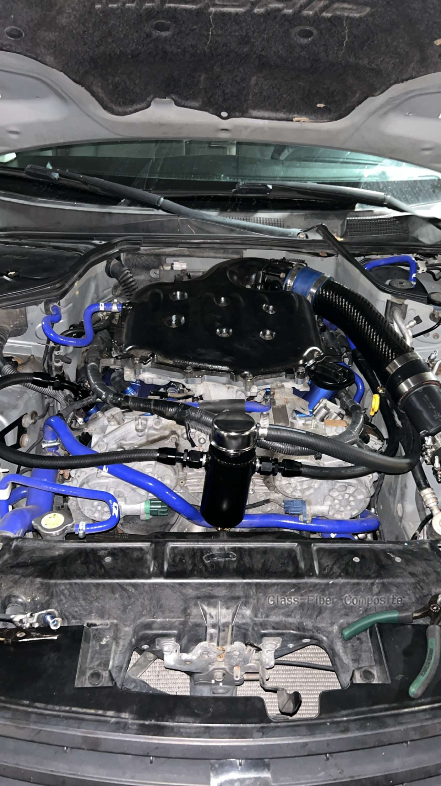
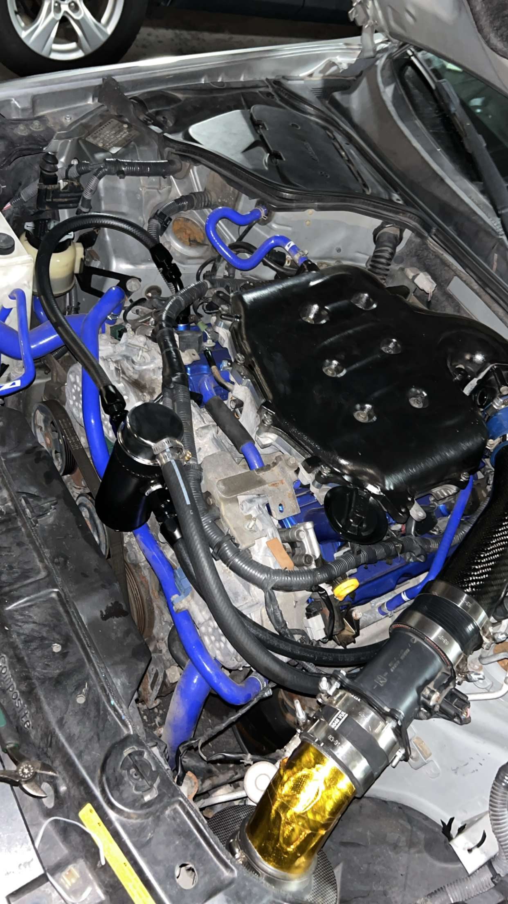
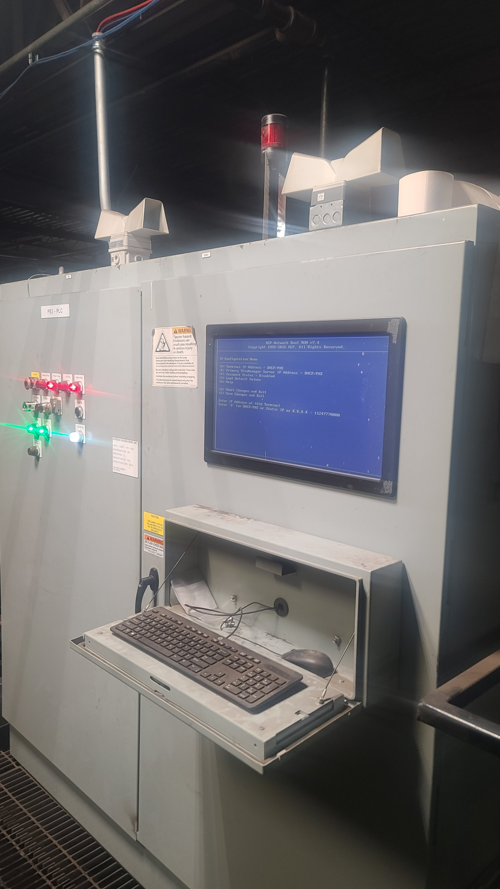
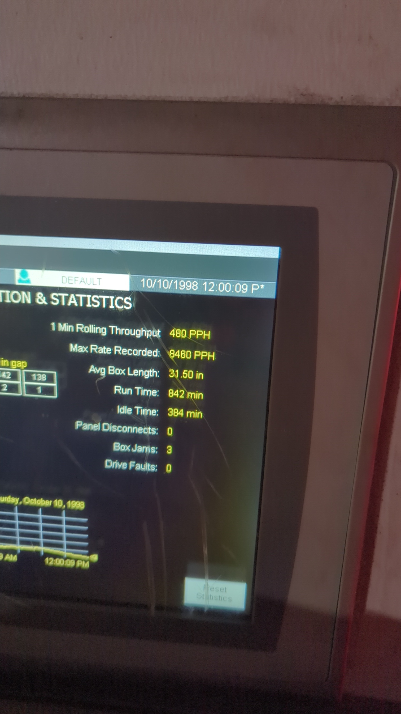
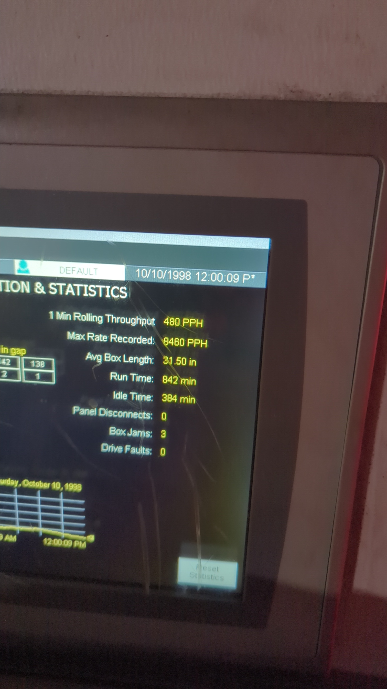
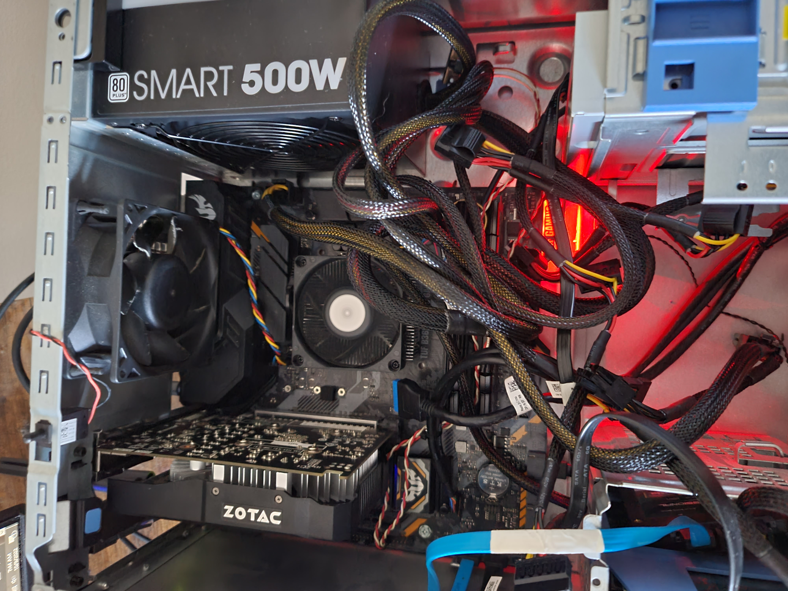
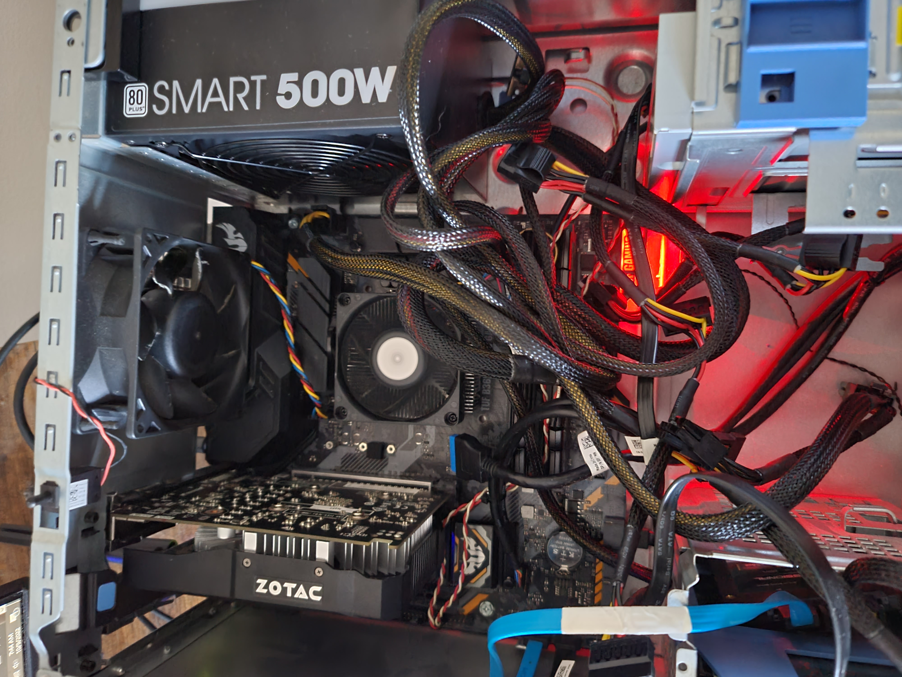

More specific skills
My skills are mostly oriented in practical methods of diagnosing; fixing, and creating machines. Most of my skills have been applied exclusivly in automotive applications.
Examples of my automotive based skill applicationBelow are some images of some of my skills at work.
 The images represent my own fabricated positive crank case pressure relief system. This system also acts as an oil catch can so its the best of both worlds. I designed it with intent to optimize engine efficency with regular use. Most catchcans made for standard vehicles only operate at athmospheic pressure. I personally didnt like the fact that most vehicles had to 'wait' until the crank case pressure was high enough in order to evacuate the excess pressure. That method could cause excess heat and strain on the engines critical components. With that in mind, I designed my system to use the engines vaccum to constantally suck the pressure out. That way, there is basically zero pressure build up and the engine can rev much more freely.
I have extensively tested this system and it clearly makes a diffrence. This vehicle used to only get about 350 miles on a full tank, now it gets well over 400 miles to the tank. The engine also just a much broader torque band with further increases regular driving practicality. The vehicles acceleration diffrence is also night and day.
This system is an example of how I can form practical solutions for significant issues. This device only costed me $80 and saves well over that in monthly fuel costs.
Some of my skills go beyond automotive applications...

 

 

Some of these examples may come as more of a hobby than a skill, however I deem it as a skill simply because it can be capitalized off of. Some of these examples I deal with at work and some of them I help friends out with. I have estensive espirence with things like building computers. I enjoy making 'frankenstein' builds with any random parts I can find. I find enjoyment in making things work when they otherwise shouldent. I am able to source specific parts and build very powerful machines for extremely cheap. I also help alot of people I know with fixing computers.
I also have some expirence working with Human Machine Intefraces (HMI's). I am able to efficently navigate through these systems and diagnose when issues with them arise.
I have many more skills that I could mention but the ones previously stated are my main practical skills.
For more information, reach our via email at Kennyatschool124@gmail.com